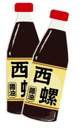

肉圓，台灣特色小吃，最有名的是發源地：彰化（彰化、北斗、員林）
肉圓（英文：Ba-wan；台羅：Bah-uân；白話字：Bah-oân）是一種臺灣的特色街頭市民小吃，名稱源自於其外觀，肉圓一般為直徑6~8公分左右的半透明扁圓形，是一種以地瓜粉、太白粉、或在來米粉、樹薯粉等材料作成的半透明肉圓皮，其內包裹豬肉與其他配料，如筍絲等的食品。除了最常見的圓形之外，亦有三角形的北斗肉圓，相傳北斗肉圓是最早的肉圓，但目前不若圓形肉圓普及。肉圓誕生已有120年的歷史。
嘉義火雞肉飯（英語：Chiayi turkey pilaf），台灣嘉義地區知名小吃之一。
根據地方耆老說法，二戰結束之後許多駐台美軍（主要為空軍）駐紮於嘉義地區，美軍將火雞帶入之後，由嘉義附近地區養殖戶大量繁殖。因戰後各項物資缺乏，一般人要吃雞肉不容易，火雞較大，相對於土雞價格也低，營養價值也高，地方小吃攤想到用火雞當作小吃食材，因此做出類似滷肉飯之雞肉飯料理。傳統南台灣多拿雞胸肉蒸熟剝成雞絲或雞片鋪在飯上、澆上醬汁稱作雞絲飯或雞片飯，而北臺灣多採用家雞做成「雞肉飯」，且以雞絲飯為多，但不如嘉義雞肉飯有名。
